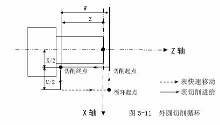
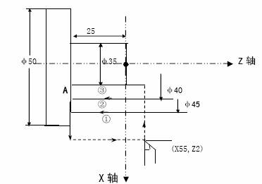
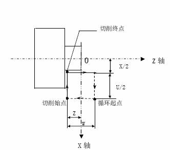
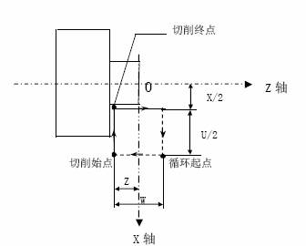
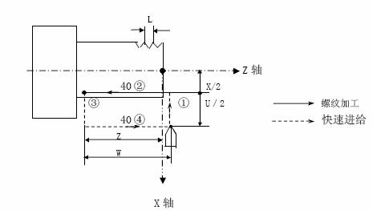
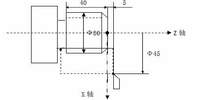
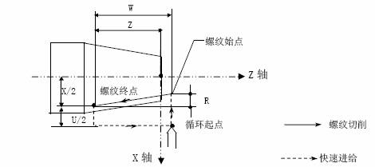

代码组及其含义
“模态代码” 和 “一般” 代码
“形式代码” 的功能在它被执行后会继续维持，而 “一般代码”
仅仅在收到该命令时起作用。定义移动的代码通常是“模态代码”，像直线、圆弧和循环代码。反之，像原点返回代码就叫“一般代码”。
每一个代码都归属其各自的代码组。在“模态代码”里，当前的代码会被加载的同组代码替换。 |
| G代码 |
组别 |
解释 |
| G00 |
01 |
快速定位 |
| G01 |
直线插补 |
| G02/G03 |
圆弧插补 |
| G32 |
00 |
螺纹切削 |
| G04 |
暂停指令 |
| G28 |
06 |
自动返回参考点 |
| G50 |
坐标系的设定 |
| G90 |
04 |
圆柱或圆锥切削循环 |
| G94 |
端面切削循环 |
| G92 |
00 |
螺纹切削循环 |
| G93 |
攻丝切削循环 |
| G96/G97 |
恒线速控制 |
| G71 |
07 |
外圆粗车循环 |
| G72 |
端面粗车循环 |
| G73 |
封闭切削循环 |
| G70 |
精加工循环 |
| G74 |
端面深孔钻加工循环 |
| G75 |
外径切槽循环 |
| G76 |
复合型螺纹切削循环 |
|
G00指令使刀具快速移动到指定的位置
指令格式：G00 X_Z_;其中X(U)Z(W)为指定的坐标值。
直径编程：快速从A点移动到B点。
绝对编程：G00 X20 Z0 ;
相对编程：G00 U-60 W-40;
注1：G00时各轴单独以各自设定的速度快速移动到终点，互不影响。任何一轴到位自动停止运行，另一轴继续移动直到指令位置。
注2：G00各轴快速移动的速度由参数设定，用F指定的进给速度无效。
G00快速移动的速度可分为100％、50％、25％、F0四档，四档速度可通过面板上的快速倍率上下调节键来选择。其四档移动速度的百分比可在位置页面的左下角显示。
注3：G00是模态指令，下一段指令也是G00时，可省略不写。G00可编写成G0。G0与G00等效。
注4：指令X、Z轴同时快速移动时应特别注意刀具的位置是否在安全区域，以避免撞刀。
|
指令格式：G01 X(U)__Z(W)__F__;
G01指令是使刀具按设定的F速度沿当前点移动到X(U)、Z(W)指定的位置点，其两个轴是沿直线同时到达终点坐标。其移动速度是由F指定的，F是模态值，在没有新的指定以前，总是有效的，因此不需要每一句都指定进给速度。
用直径编程，以F速度从A点到B点。
绝对编程：G01 X40 Z-30 F100;
相对编程：G01 U20 W-30 F100;
G01指令也可以单独指定X轴或Z轴的移动
G01指令的F进给速度可以通过面板上进给倍率上下调整，调整范围是（0％－150％）
G01指令也可直接写成G1.
|
用下面的指令，刀具可以沿着圆弧切削运动。
指令格式：
G02 X(U)__Z(W)__I__K__F__;
G03X(U)__Z(W)__I__K__F__;(圆心坐标编程)
G02X(U)__Z(W)__R__F__;
G03X(U)__Z(W)__R__F__;(圆弧半径编程)
|
用G32指令，可以切削相等导程的直螺纹，锥螺纹和端面螺纹。
螺纹加工
编程格式：
G32 X(U)__Z(W)__F/I__;
其中：X(U)、Z(W)为螺纹终点的绝对或相对坐标，X(U)省略时为圆柱螺纹切削，Z(W)省略时为端面螺纹切削，X(U)、Z(W)都编入时可加工圆锥螺纹。
F是公制螺纹的导程。单位：mm 范围：0.0001－500.0000
I是英制螺纹的导程。单位：牙/英寸 范围：0.060－254000.000
一般加工一根螺纹时，从粗车到精车，用同一轨迹要进行多次螺纹切削。因为螺纹切削开始是从检测出主轴上的位置编辑器一转信号后才开始的，因此即使进行多次螺纹切削，零件圆周上的切削点仍是相同的，工件上的螺纹轨迹也是相同的，但是从粗车到精车，主轴的转速必须是一定的。当主轴转速变化时，有时螺纹会或多或少产生偏差。
在螺纹切削开始及结束部分，一般由于升降速的原因，会出现导程不正确部分，考虑此因素影响，指令螺纹长度要比需要的螺纹长度要长。
例：切圆柱螺纹
螺纹导程：4mm
&1＝3mm（螺纹升速段，&1≥3mm）
&2＝1.5mm（螺纹降速段，&2≥1.5mm）
根据上述数据编程（分两次切入）
程序如下：
……
G00 U-62.0;
G32 W-74.5 F4.0;
G00 U62;
W74.5;
U-64;(第二次再切入1mm)
G32 W-74.5;
G00 U64.0;
W74.5;
……
车圆锥螺纹：
螺纹导程：3.5mm
&1＝3mm ，&2＝1.5mm
根据上述数据编程：
程序如下：
……
G00 X12 Z3.0;
G32 X41.0 Z-41.5? F3.5;
G00 X50;
Z3;
X10;
G32 X39 Z-41.5;
G00 X50;
Z3;
……
注1：在切削螺纹中，进给速度倍率无效，固定在100％。
注2：在螺纹切削中，主轴不能停止，如果暂停，切深会急剧增加是危险的。暂停在螺纹切削中无效。在执行螺纹切削状态之后的第一个非螺纹切削程序段后面，用单程序段来停止。
注3：如果在单程序段状态，进行螺纹切削时，在执行完非螺纹切削程序段后停止。
注4：当前一个程序段为螺纹切削程序段时，而现在程序段也是螺纹切削，在切削开始时，不检测一转信号，直接开始移动。
如：G32 W-20 F3;螺纹切削开始检测－转信号。
G32 W-30 F2;此段螺纹切削不检测－转信号。
|
利用暂停指令，可以推迟下个程序段的执行，推迟时间为指令的时间，其格式如下：
G04 P_;或者G04 X_;或者 G04 U_;
其中X，U均是以秒为单位指令暂停时间。指令范围从0.001－99999.999秒。P是以毫秒为单位指令暂停时间。指令范围从1－99999999毫秒。
例：G04 X1;表示程序暂停1秒。
G04 P1000;表示程序暂停1秒。
G04 U1表示程序暂停1秒。
特殊应用：当X.U.P均省略，仅指令G04时可看成为准确停指令，如加工拐角类零件时，在拐角处有时会出现过切现象，如在拐角处加G04指令，即可消除过切现象。
|
| |
|
所谓参考点是机械上某一特定的位置点。有机械零点时，此机械零点就是机床的参考点。无机械零点时，设置的浮动零点也可以看成是机床的参考点。可以在手动机械回零方式下返回参考点，也可以利用G28指令使两个坐标轴自动返回到参考点。
自动返回参考点指令格式：
G28 X_Z_;
其中X.Z是指定返回到参考点中途经过的中间点，用绝对值指令或增量值指令。
其回参考点的过程为：
1.
快速从当前位置定位到指令轴的中间点位置
2.
快速从中间点定位到参考点
注1：在电源接通后，如果一次也没进行手动返回参考点，指令G28时，从中间点到参考点的运动和手动返回参考点时相同。
注2：G28指令返回参考点时，如仅指定一个轴的中间点，则是该轴返回到参考点，另一个轴不会返回。
|
指令格式是：
G50 X(x) Z(z)
根据此指令，建立一个加工坐标系，而当前刀具的位置在此加工坐标系中的坐标值为（X.Z），此坐标系称为工件或零件的加工坐标系。坐标系一旦建立后，后面指令中绝对指令的位置都是用此坐标系下的坐标值来表示的。
注：在补偿状态，如果用G50设定坐标系，那么补偿前的位置是用G50设定的加工坐标系中的位置。开始运行程序以前一般先取消刀具补偿。KND系统返回参考点后，自动取消刀具补偿。
|
使用主轴变频器时，可实现主轴的恒线速度控制。所谓的恒线速度控制是指S后面的线速度是恒定的，随着刀具的位置变化，根据线速度计算出主轴转速，并把与其对应的电压值输出给主轴控制部分，使得刀具瞬间的位置与工件表面保持恒定的切削速度关系。
线速度的单位是米/分
1.
指令方法
恒线速控制指令如下：
G96 S_;S后指定线速度。
恒线速控制指令取消如下：
G97 S_；S后指定主轴转速。
2.
主轴最高转速限制
格式：G50 S_;S后指令恒线速控制的主轴最高转速（转/分）
在恒线速控制方式下，当主轴转速高于G50后指定的主轴最高转速值时，则被限制在此最高转速上。
注1：对于用G00指令的快速进给程序段，恒线速控制仅在G00指令的终点位置有效。在G01、G02、G03等切削指令时进行恒线速控制。
注2：在G96状态中，被指定的S值，即使在G97状态中也保持着，当返回到G96状态时，其值恢复。
G96 S50; (50米/分)
G97 S100 ;(取消恒线速度1000转/分)
G96 G01 X100;(恒线速度有效50米/分)
注3：从G96状态变为G97状态时，G97程序段如果没有指令S代码，那么G96状态后的最后转速作为G97状态的S码使用。
N100 G97 S800;(800转/分)
N200 G96 S100;（100米/分）
N300 G97 ；（X转/分）
X是N300前一个程序段的转速，即从G96状态变为G97状态时，主轴速度不变。G97→G96时，G96状态的S值有效，如果S值一次也没指令，则S=0米/分。
注4：机床锁住时，机械不懂，对应程序中的X轴坐标值变化，也进行恒线速控制。
注5：切螺纹时，恒线速控制也是有效的，因此在切螺纹时，要用G97方式使恒线速控制无效，以使主轴以同一转速移动。
注6：每转进给在恒线速度控制方式下，G96也可使用。
注7：恒线速控制中指定的线速度是相对于编程轨迹的，即是刀具的刀尖点，而不是刀补后的位置的线速度。
例：程序段如下：
N10 ……;
NG00 X100 Z80 ;
N40 T0101 ;
N50 X40 Z10 ;
N60 G50 S2000 ; （指定最高转速）
N70 G96 S200; (线速度是200米/分)
N80 G01 Z-30 F100 ;
N90 X60 Z-60 ;
N100 Z-65;
N110 G97 S500;
N120 ……;
|
圆柱切削循环指令编程格式为：
G90 X(U)_Z(W)_F_;
R为圆锥面切削始点与切削点处的半径差。图中X轴向切削始点坐标小于切削终点坐标即顺锥，R的数值为负，反之是逆锥R为正。

图4.1－1
例：采用G90指令加工圆锥面如图，程序如下（采用恒线速度每转进给编程）：
O0001；
N10 M03 S1000;
N20 T0101;
N30 G00 X65 Z5 ;
N50 G96 S120;
N60 G99 G01 Z2 F1 M08;
N70 G90 X60 Z-35 R-5 F0.2 ;
N80 X50;
N90 G00 G98 X100 Z100 M09 ;
N100 G97 S1000 T0100;
N110 M05;
N120 M03;

图4.1－2
|
切削端平面时，编程格式为：
G94 X(U) _Z(W)_F_;
循环过程如下图所示，X，Z为端面切削终点坐标值，U、W为端面切削终点相对循环起点的坐标分量。

图4.1－3
切削锥端平面编程格式是：
G94 X(U) _Z(W)_R_F_;
循环过程如图所示，R为端面切削始点至终点位移在Z轴方向的坐标分量，图中轨迹的方向是Z轴的负方向，R值为负，反之为正。

图4.1－4
|
利用G92指令，可以将螺纹切削过程中，从始点出发“切入－切螺纹－让刀－返回螺纹加工始点”的4个动作作为一个循环用一个程序段指令来完成。
直螺纹技工编程格式是：
G92 X(U) _Z(W)_F/I_;
循环过程如图所示，X、Z为螺纹切削终点的坐标值，U、W为螺纹切削终点相对循环起点的坐标分量，有正负符号。F/I指定螺纹导程L，同G32指定。

图4.1－5
例：用表G92指令加工圆柱螺纹图的程序如下，L为1.5mm

图4.1－6
程序：
N10 M03 SXX;
N20 T0101;
N30 G00 X45 Z5 ;
N40 G92 X29.2 Z-40 F1.5;
N50 X28.6;
N60 X28.2;
N70 X28.04;
N80 G00 X100 Z50;
N90 T0100 M05;
N100 M30;
注：关于螺纹切削应注意，与G32螺纹切削相同，其螺纹切削循环中的暂停的停止为在动作3结束后停止。
圆锥螺纹切削循环：
G92 X(U) _Z(W)_R_F/I;
循环过程如图所示，R为在X轴方向螺纹切削始点与螺纹切削终点的半径差。在X轴方向切削始点坐标小于切削终点坐标时R的数值为负，反之R为正值.

图4.1－7
螺纹切削循环中的加减速控制：
在螺纹尾部，由于指数加减速控制，造成一定距离的螺距不均匀，主轴转速越高，螺纹不均匀的长度越长，为减小误差，应减小指数加减速时间常数，但是配置步进电机时，又会造成电机堵转。为了解决这个问题：
可以选择X/Z轴按直线加减速升降速；
可以选择X轴以G00快速速率退尾。
多头螺纹加工功能
用L直接指定螺纹的头数
格式：G92 X_Z_L_F_;
注：地址L与地址P为复合键，编辑程序时，反复按P地址依次为：P,Q,I,J,K,L.
说明：重复L次G92循环：切削L头螺纹。L为模态，指定后，一直有效。
L的范围：1－100。否则按L1处理。
如：L03,3头螺纹，连续执行G92 3次。第一次，主轴一转信号来后立刻开始加工，第二次，偏移120度后，开始切削螺纹，第三次，偏移240度后，开始切削螺纹。
例：
G92 X50.Z-100 F5 L5; 在X50处，加工5头螺纹
X48.5; 在X48.5处，加工5头螺纹
X45； 在X45处，加工5头螺纹
G00 X100 Z100;
……
螺纹切削固定循环时螺纹退尾
编程格式：
G92 X_Z_F/I_P_;
P:退尾量：
设定单位：0.1螺距，用P表示为P1，如螺纹退尾为1个螺距，用P表示为P10。
设定范围：1－225，当设置值超过范围时，无效。
注：P指定的退尾量为模态值，指定后，一直有效，运行后同时业改变参数P’28的数值，且关机后保持不变。
任意角度退尾机能
当螺纹切削终了无退刀槽时，系统必须具有螺纹加工的自动收尾功能，才能加工出合格的一段螺纹。包括螺纹退尾的编程格式是：
G92 X_Z_F_J_K_P_;
J,K设置退尾X,Z的比例。J2K1时，X比Z快1倍。
P:退尾量。设定单位：0.1螺距，设定范围：1－255。
J,K,P为模态值。设置J,K,P后，一致保持有效，且设置P后，自动设置参数P’28。如果不指定为默认的P28号参数中设定的值
执行G92 J0或K0时，取消任意角度指定，固定为45度。开机时，默认为45度。
J,K设置为负数时，或超出65535时，设置无效。设置范围：1－65535
注1：退尾角度对G76也有效
注2：地址J与地址P为复合键，编辑程序时，反复按P地址依次为：P,Q,I,J,K,L。
|
G93 Z(W)_F/I_;
执行过程如下：
先同G32，Z轴向负向按切螺纹的方式进给。
运动刀程序指定的坐标后，自动停止主轴，完全停止主轴后，自动按指定的反向旋转主轴，Z轴退回刀起始位置。
停止主轴旋转，恢复程序段前指定的方向旋转主轴。
相关说明：
同G90等同定循环，G93为模态G代码。所以G93后应指定G01或G00等。
G93 Z-100 F5 ；攻丝循环到Z-100;
Z-101; 攻丝循环到Z-101；
G00 X50 ；G00运动
注意事项：
如果Z正向运动后，再执行G93时，由于反向，系统先执行反向间补。此时应设置参数P011? RVDL＝0。如果配步进机堵转时，可设置更小的间隙补偿频率值。或执行G93前，先指令Z轴负向指令。
主轴制动时间参数设置影响停止后反向启动旋转时间。请注意设置。
注1：Z必须为负向运动，否则产生P/S报警012‘G93 formate error ’。
注2：不能编入X值，否则产生P/S报警012；‘G93 formate error’.
注3：执行G93之前，必须启动主轴旋转。
注4：要求机床的主轴刹车时间短。系统准备时按运动值＋50.000。要求输出主轴停止时，运动长度不能超出50毫米。
注5：要求主轴转速不能过高。
注6：指定1时，为英制螺纹指定，与G32，G92指定的相同。
注7：攻丝过程中，升降速可以由参数选择。
注8：当选择加减速控制时，如果主轴转速有变化，使得螺纹变化有延迟。所以要求精度高时，选择无升降速。但是，配步进时，主轴速度不能过高，否则由于无升降速而会造成堵转。 |
编程格式：
G71 U(�Sd) R(e) ;
G71 P(ns) Q(nf) U(�SU) W(�SW) F(f) S(s) T(t);
式中：�Sd切深量，无符号指定。切入方向由AA’方向决定。
半径指定：该指定是模态的，一直到下次指定以前均有效。并且用参数P21也可以指定。根据程序指令参数值也改变。
e:退刀量。是模态值，在下次指定前均有效，参数P22也可设定，用程序指令时，参数值也改变。
ns:精加工形状程序段中第一句程序段的顺序号。
nf:精加工形状程序段中最后一句程序段的顺序号。
�Su:X轴方向精加工余量的距离及方向，直径指定。
�Sw：Z轴方向精加工余量的距离及方向。
注1：在使用G71进行粗加工循环时，只有含在G71程序中的F,S,T功能有效，而含在ns-nf程序段中的F,S,T功能只对精加工有效，在粗加工循环中是无效的。
注2：A-B之间必须符合X轴，Z轴方向的共同单调增大或减小的模式。
注3：程序段ns-nf中带有恒线速度选择功能时，指令G97,G96对粗加工循环无效，含在G71中或以前的程序段中的G96,G97对粗切循环有效
注4：在A至A’间，顺序号NS的程序段中可含有G00或G01指令，但不能含有Z轴移动指令。
注5：在顺序号NS到NF的程序段中，不能调用子程序。
|
G72与G71均为粗加工循环指令，而G72是沿着平行于X轴进行切削循环加工的，编程格式为：
G72U(�Sd) R(e) ;
G72 P(ns) Q(ns) U(�Su) W(�SW) F(�Sf) S (s) T(t)
其参数�Sd、e、ns、nf 、ns、�Su、�Sw、f、s、t和G71中参数含义相同
|
所谓封闭切削循环就是按照一定的切削形状逐渐地接近最终形状。这种方式对于铸造或锻造毛坯的切削是一种效率很高的方法。
编程格式：
G73 U(I)_W(K)_R(d)_;
G73 P(ns)_Q(nf)_U(�Su)_W(�Sw)_F(f)_S(s)_T(t)_;
i:X轴方向退刀的距离及方向，即是X轴方向的最大切削余量处的半径值，这个指定是模态的，一直到下次指定前均有效。并且用参数P23也可设定，根据程序指令，参数值也改变。
k:Z轴方向退刀距离及方向，这个指定是模态的，一直到下次指定前均有效，并且用参数P25也可设定，根据程序指令参数值也改变，如指定R(d)为0.001表示粗加工次数为一次，R1表示粗加工次数为1000。
其余与G71中数据参数相同，用G73时与G71.G72一样，只有G73程序段中的F,S,T对粗加工有效。
注1：循环动作是按G73指令的P、Q之间程序来进行的，切削形状可分为四种，编程时请注意�Su、�Sw、i、k的符号。循环结束后，刀具自动返回A点。
注2：用G73指令时，X轴、Z轴是否单调增大或减小无影响。 |
由G71.G72和G73完成粗加工后，可以用G70进行精加工。编程格式：
G70 P(ns) Q(nf) 其中ns和nf与前述含义相同。
精加工时G71.G72.G73程序段中的F,S,T的指令都无效，只有在ns－nf程序段中的F,S,T才有效。G70的循环一结束，刀具就用快速进给返回始点，并开始读入G70循环的下个程序段。 |
此循环可以断续地进行深孔钻削循环
其指令格式是：
G74 R(e);
G74 Z(w) G(�Sk) F(f);
E:回退量，这个指定是模态的，在下次指定前一直有效，另外，用参数（P’26）也可以设定，根据程序指令，参数值也改变，单位毫米。
Z(w) Z方向钻削深度，无符号，单位：毫米
�Sk:每次Z方向的移动量，无符号。单位：毫米
F：进给速度
|
此指令多用于外径沟槽加工和切断
指令格式：G75 R(e);
G75 X(U) _P(�Si)_F(f)_;
E:退刀量
X(U):沟槽深度
�Si：每次循环的切削量
F：进给量
|
G76 P(m)I(a)q(�Sdmin)R(d);
G76 X(U)Z(W)R(i)P(k)Q(�Sd)F(L);
m:最后精加工的重复次数1－99。此指定值是模态的，在下次指定前均有效。另外用参数（P’027）也可以设定，根据程序指令，参数值也改变。
r:螺纹倒角量。如果把L作为导程，在0.01－9.9L的范围内，以0.1L为一挡，可以用00－99两位数值指定。该指定是模态的，在下次指定前一直有效。另外，用参数（P’028）也可以设定，根据程序指令也可改变参数值。此数值同G92螺纹的退尾量，r为10时，表示螺纹的倒角长度为1个螺距。
a:刀尖的角度
可以选择80°，60°，55°，30°，29°，0°6种角度。把此角度值原数用两位数指定。此指定是模态的，在下次被指定前均有效。另外，用参数（P’029）也可以设定，根据程序指令也可改变参数值。
m,r,a同用地址P一次指定。
d:精加工余量。此指定是模态的，在下次被指定前均有效。并且用参数（P’031）也可以设定，用程序指令，也改变参数值。单位是毫米。
i：螺纹部分的半径差I=0为切削直螺纹。单位是毫米。
k:螺纹牙高。单位是微米
�Sd：第一次切入量单位是微米。
注1：循环动作由地址X(U)、Z(W)指定的G76指令进行，单位毫米。
此循环加工中，刀具为单侧刃加工，刀尖的负载可以减轻。另外，第一次切入量为�Sd，第N次为�Sdn次幂，每次切削量是一定的，考虑各地址的符号，有四种加工图形，也可以加工内螺旋。在上图所示的螺纹切削中，只有C.D间用F指令的进给速度，其他为快速进给。
|
|